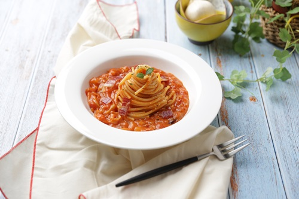
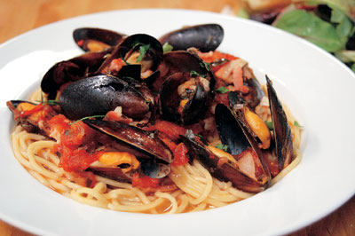
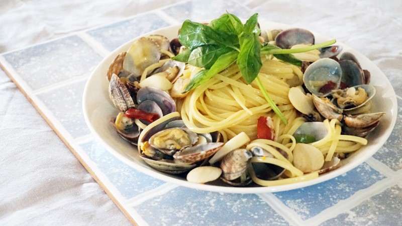
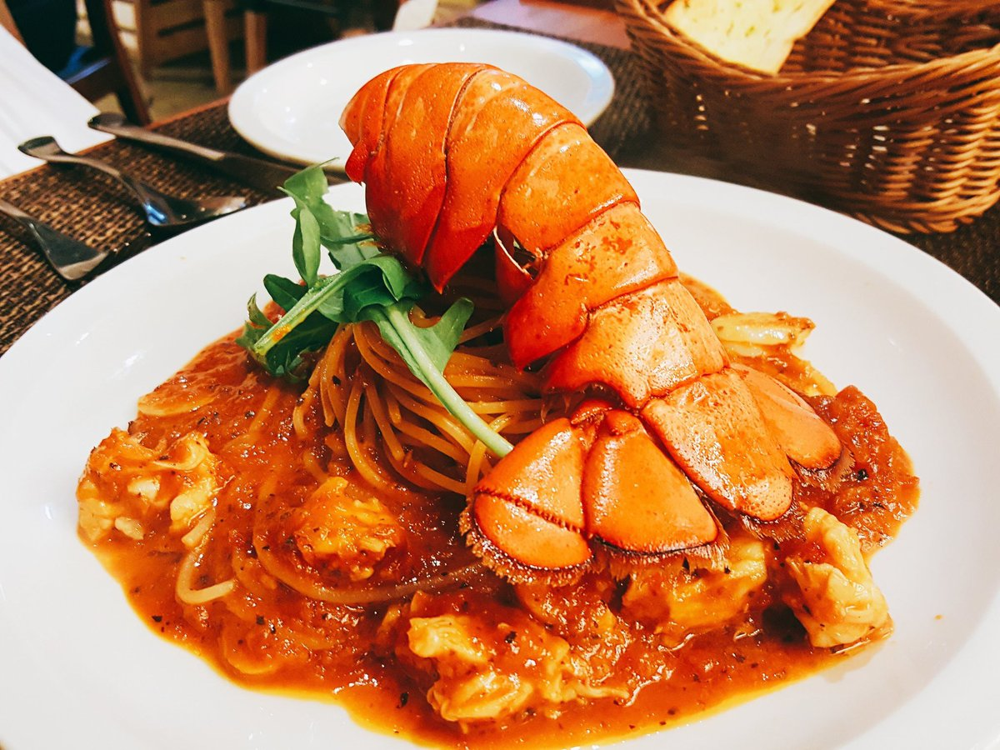
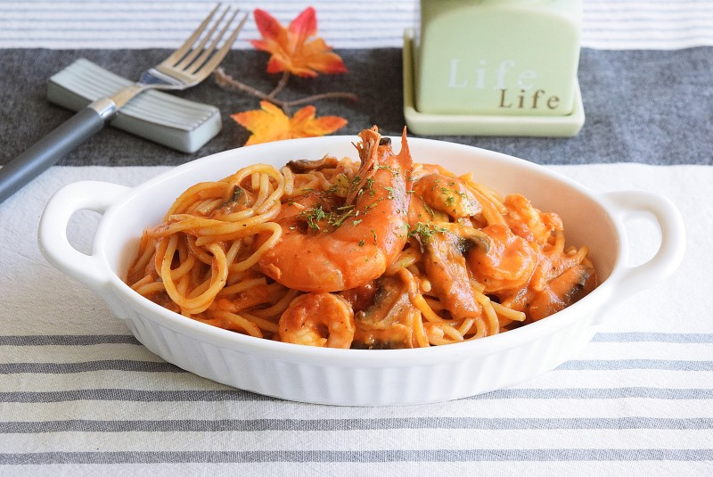
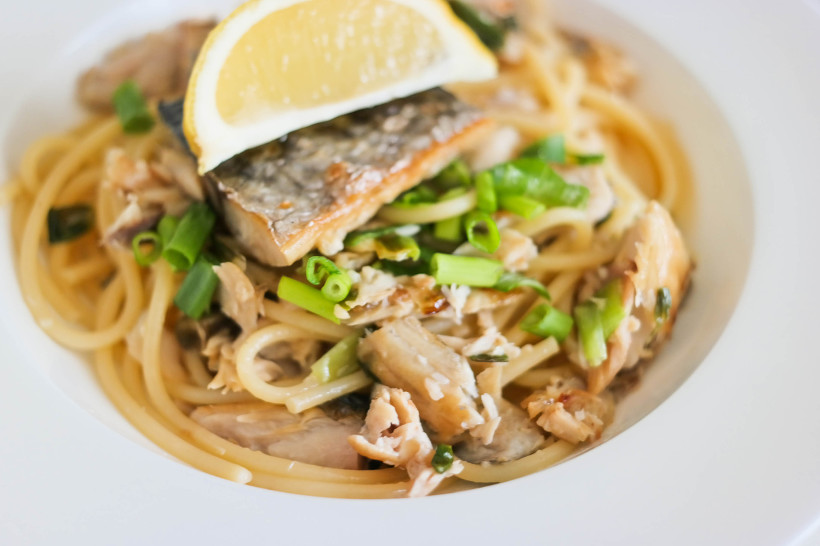
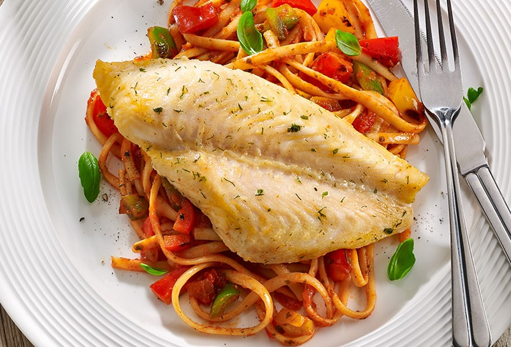

씨푸드
파스타에 어울리는 해산물을 알아보자
바다의 해산물의 종은 몇천가지가 넘는다 파스타의 최적의 궁합을 맞는 해산물을 골라, 맛있는 파스타를 만들어보자

(어패류)
홍합

홍합 또는 담치라고 불리는데 이는 굴목 과의 조개이며 국물에 넣고 조릴시 깊은 맛을 자랑합니다
백합

백합은 해양 쌍각 연체 동물 인 식용 조개 종입니다. 이 종은 북대서양에 서식하며 특히 관자가 맛이 좋습니다
(갑각류)
랍스타

랍스타는 고가의 해산물로 유명합니다 특히 랍스타의 꼬리와 곁들여 먹으면 육즙과 토마토소스의 조화를 맛보실 수 있습니다
새우

힘주어 씹으면 톡 터지며 새우의 고소한 맛을 맛보며 파스타를 맛보실 수 있습니다
(어류)
고등어

고등어는 비린내가 심한 생선이지만 과즙을 사용하여 향을 잡는다면 부드러운 맛을 느끼실 수 있습니다
도미

봄철이 가장 맛있는 생선으로 지방이 적고 살과 단백질이 풍부하고 지방질이 적어 1석 2조 입니다